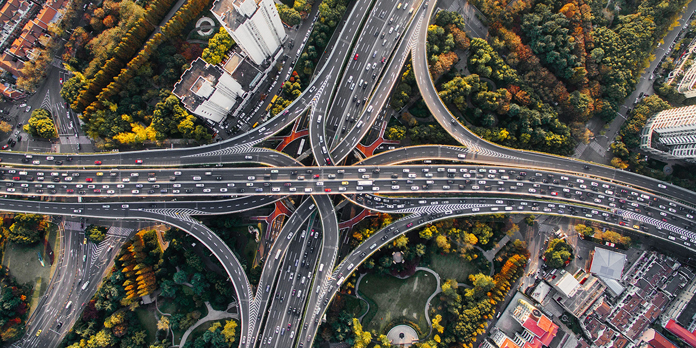
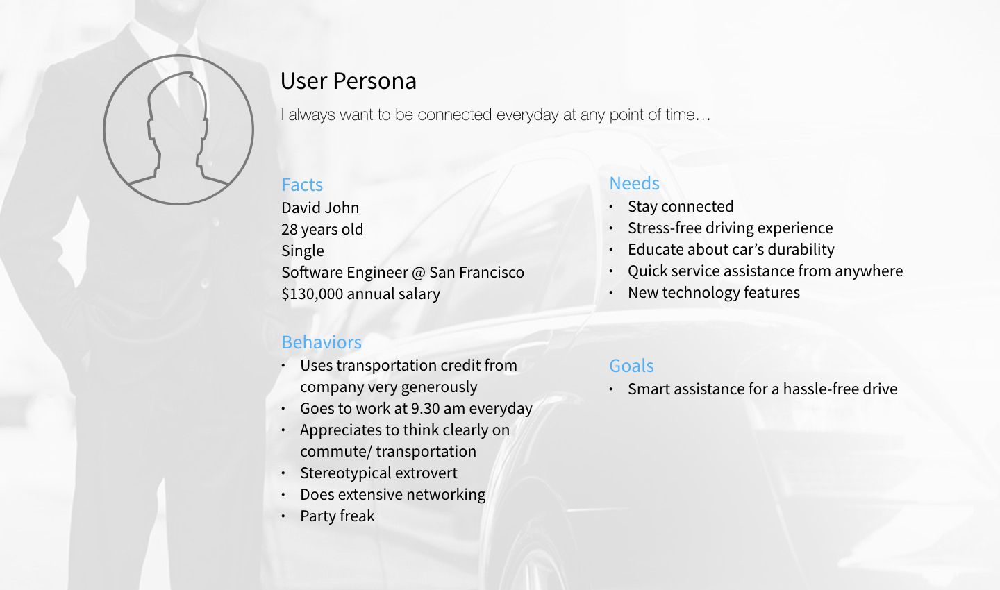
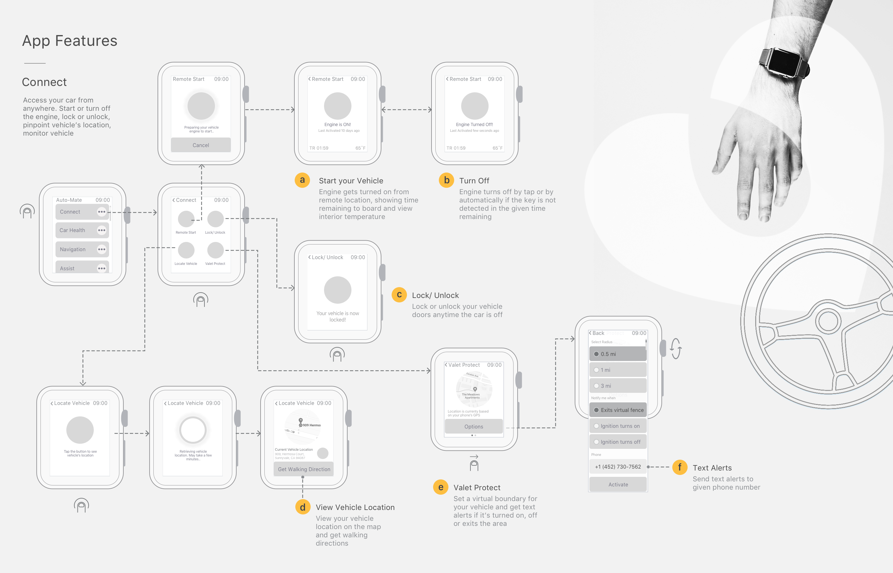
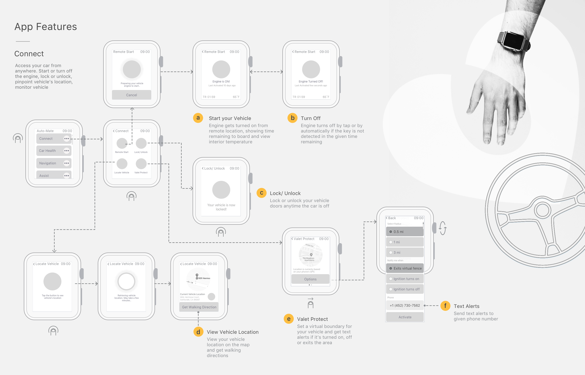

Finding a way forward to ideate a safe and better driving experience with an intuitive design being itself a natural extension of the individual.
All over the world every professionals jump-start by planning his/ her day, drive to work place, finish work and drive back home or anyother place. It's not that simple, how it seems to be.

Every year 1.3 Million lives have been lost in automobile accident and many suffer injured that are reported to involve a distracted driver. While death toll keeps increasing, 95% of it are due to human error while operating the vehicle. So how to make the world a better place and driving more seamless?
Even though cars are such a vital part of our daily lives, we remain deeply disconnected from them, lack the tools to communicate with vehicles and be informed. Concept spins around how I worked to blur the boundaries between device and software.
Being a part of urban working population, I wanted to deal with the biggest problem of driving and being safe on road. Wanted to Feel empowered and hold responsible to play active role in building future using human centric design methodology.
Ease out transit for the world’s professionals to make them more productive, safe and successful. With the advent of technology user should be able to perceive better, calculate faster, react earlier before or on roads. The significant progress in natural language processing and computational power made it possible to use a different type of interface — voice-based.
"But how to provide it in a way that’s a little more human, a little more cautious in the moment when you’re commuting or about to head somewhere?"
Questions started forming around the idea of communication between car via watch: What could it add to people’s lives? What new ways could you use a watch that you wear to drive and plan the day better? What if a car could use a device that could filter out noise and instead only serve truly important information? It could make our life phenominal.
"Have glared down their noses at those who bury themselves in their phones while driving and then absentmindedly thrust hands into their own pockets at every ding or buzz.

The purpose to use the wrist-mounted technology, what problems it might solve— that was something truly based on the intuitiveness of the user interface and how the app itslef becomes a true mate to stand-by difficult times
I began to empathise people's pain points, study their behaviour and understand the gaps as well as capture the nuances to make this idea functional relevant to their lives.
 

App uses its intelligence to diligently connect your car, reads your calendar, mail, messaging, state of mind, heart rate, alcohol level, detects your current location and suggests a handful of intellectual responses/ options. An interaction that could last only 3 seconds, 5 at most based on level of importance in the information, as sensed by car state of motion or response to it, is the only cue the app needs to prioritize. Activating autonomous car is one such highlight!
Bridging a communication gap between automobile and driver based on voice, glance information, physical sensations with accuracy and relevance. Totally a different experience altogether, that was worth conceptualizing!